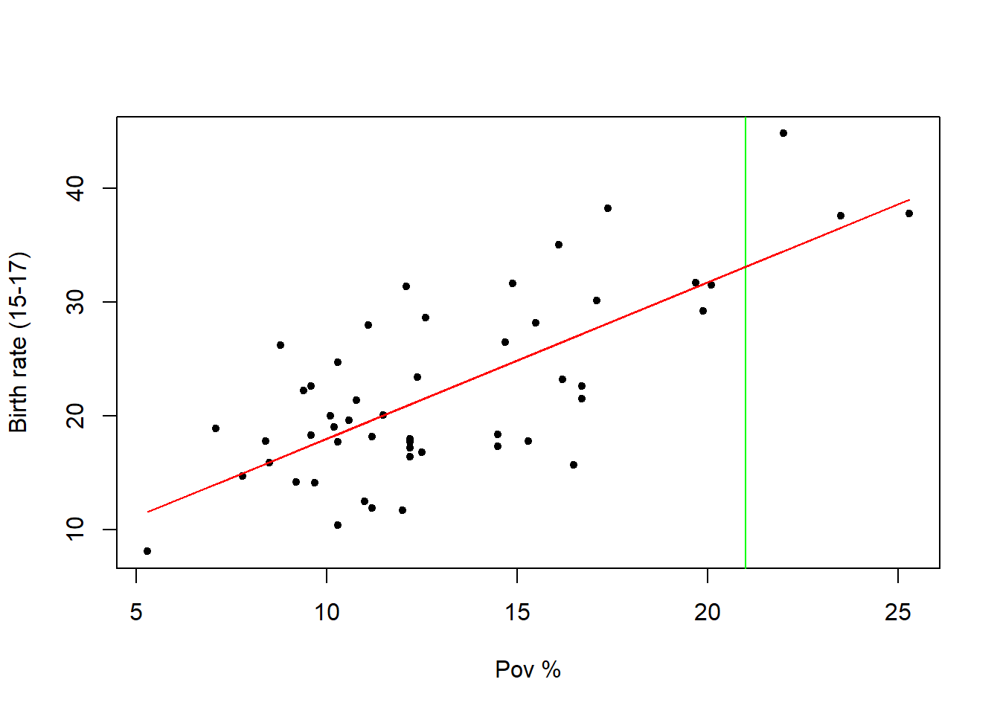

Rows: 51 Columns: 6
── Column specification ────────────────────────────────────────────────────────
Delimiter: "\t"
chr (1): Location
dbl (5): PovPct, Brth15to17, Brth18to19, ViolCrime, TeenBrth
ℹ Use `spec()` to retrieve the full column specification for this data.
ℹ Specify the column types or set `show_col_types = FALSE` to quiet this message.
df %>%head(.,10) %>%kable()
Location
PovPct
Brth15to17
Brth18to19
ViolCrime
TeenBrth
Alabama
20.1
31.5
88.7
11.2
54.5
Alaska
7.1
18.9
73.7
9.1
39.5
Arizona
16.1
35.0
102.5
10.4
61.2
Arkansas
14.9
31.6
101.7
10.4
59.9
California
16.7
22.6
69.1
11.2
41.1
Colorado
8.8
26.2
79.1
5.8
47.0
Connecticut
9.7
14.1
45.1
4.6
25.8
Delaware
10.3
24.7
77.8
3.5
46.3
District_of_Columbia
22.0
44.8
101.5
65.0
69.1
Florida
16.2
23.2
78.4
7.3
44.5
Goal -> predict birth rate as function of the poverty rate
Call:
lm(formula = y ~ x)
Residuals:
Min 1Q Median 3Q Max
-11.2275 -3.6554 -0.0407 2.4972 10.5152
Coefficients:
Estimate Std. Error t value Pr(>|t|)
(Intercept) 4.2673 2.5297 1.687 0.098 .
x 1.3733 0.1835 7.483 1.19e-09 ***
---
Signif. codes: 0 '***' 0.001 '**' 0.01 '*' 0.05 '.' 0.1 ' ' 1
Residual standard error: 5.551 on 49 degrees of freedom
Multiple R-squared: 0.5333, Adjusted R-squared: 0.5238
F-statistic: 56 on 1 and 49 DF, p-value: 1.188e-09
Inference
Prediction
February 2nd
In our case we want to model \(y\) as a function of \(x\). In ‘R’, the formula for this looks like…
# covarinant is on right, response variable is on leftformula(y ~ x)
y ~ x
typeof(formula(y~x))
[1] "language"
A linear regression model in R is called the Linear Model function, i.e., ‘lm()’
model <-lm(y ~ x)model
Call:
lm(formula = y ~ x)
Coefficients:
(Intercept) x
4.267 1.373
summary(model)
Call:
lm(formula = y ~ x)
Residuals:
Min 1Q Median 3Q Max
-11.2275 -3.6554 -0.0407 2.4972 10.5152
Coefficients:
Estimate Std. Error t value Pr(>|t|)
(Intercept) 4.2673 2.5297 1.687 0.098 .
x 1.3733 0.1835 7.483 1.19e-09 ***
---
Signif. codes: 0 '***' 0.001 '**' 0.01 '*' 0.05 '.' 0.1 ' ' 1
Residual standard error: 5.551 on 49 degrees of freedom
Multiple R-squared: 0.5333, Adjusted R-squared: 0.5238
F-statistic: 56 on 1 and 49 DF, p-value: 1.188e-09
x2 <- x^2model2 <-lm(y ~ x + x2)model2
Call:
lm(formula = y ~ x + x2)
Coefficients:
(Intercept) x x2
10.60211 0.43733 0.03128
summary(model2)
Call:
lm(formula = y ~ x + x2)
Residuals:
Min 1Q Median 3Q Max
-10.6341 -3.9590 -0.5538 3.0886 10.9265
Coefficients:
Estimate Std. Error t value Pr(>|t|)
(Intercept) 10.60211 7.28188 1.456 0.152
x 0.43733 1.02534 0.427 0.672
x2 0.03128 0.03371 0.928 0.358
Residual standard error: 5.558 on 48 degrees of freedom
Multiple R-squared: 0.5416, Adjusted R-squared: 0.5224
F-statistic: 28.35 on 2 and 48 DF, p-value: 7.43e-09
*With a very small p-value, that means we accept the alternate hypothesis against the null hypothesis, which means that that certain variable is a goo predictor
What are the null and alternative hypotheses for a regression model?
Null model/hypothesis
There is no linear relationship between x and y –> This means that in terms of \(\beta_0\) and \(\beta_1\), that \(\beta_0 = 0\) in null hypothesis (\(H_0\)) –> The alternate hypothesis is that \(\beta_1 = 0\)
To summarize:
\[
\begin{align}
H_0: \beta_0 = 0 && H_1: \beta_1\ \neq 0
\end{align}
\] * When we see a small \(p\)-value, then we reject the null hypothesis in favor of the alternate hypothesis. This means that there is a significant relationship between \(x\) and \(y\) or in more mathematical terms, there is significant evidence in favor of a correlation between \(x\) and \(y\).
This is what the \(p\)-values in the model are capturing. We can also us the ‘kable’ function to print the results nicely
Call:
lm(formula = y1 ~ x)
Residuals:
Min 1Q Median 3Q Max
-2.4861 -0.6834 0.1127 0.6938 2.7846
Coefficients:
Estimate Std. Error t value Pr(>|t|)
(Intercept) 0.88271 0.20785 4.247 4.94e-05 ***
x 3.09965 0.07182 43.159 < 2e-16 ***
---
Signif. codes: 0 '***' 0.001 '**' 0.01 '*' 0.05 '.' 0.1 ' ' 1
Residual standard error: 1.047 on 98 degrees of freedom
Multiple R-squared: 0.95, Adjusted R-squared: 0.9495
F-statistic: 1863 on 1 and 98 DF, p-value: < 2.2e-16
The summary for model 2 is:
summary(model2)
Call:
lm(formula = y2 ~ x)
Residuals:
Min 1Q Median 3Q Max
-7.4586 -1.6125 -0.1984 1.8285 7.8999
Coefficients:
Estimate Std. Error t value Pr(>|t|)
(Intercept) 0.9511 0.6180 1.539 0.127
x 3.0590 0.2135 14.326 <2e-16 ***
---
Signif. codes: 0 '***' 0.001 '**' 0.01 '*' 0.05 '.' 0.1 ' ' 1
Residual standard error: 3.113 on 98 degrees of freedom
Multiple R-squared: 0.6768, Adjusted R-squared: 0.6735
F-statistic: 205.2 on 1 and 98 DF, p-value: < 2.2e-16
Because the \(p\)-value is so small, this indicates that there is a relationship between the variables
Prediction
Prediction is the ability of a model to predict values for “unseen” data
x <- df$povpcty <- df$brth15to17plt()
Suppose we have a ‘new’ state formed whose ‘povct’ value is \(21\)
# The best way to predict the y value (birth rate for 15 to 17) is to find point on regression line where the x-value is 21plt()abline(v =21, col ='green')lines(x, fitted(lm(y ~ x)), col ='red')

The best prediction is the interesection. In ‘R’ you can use the predict() function to do this: